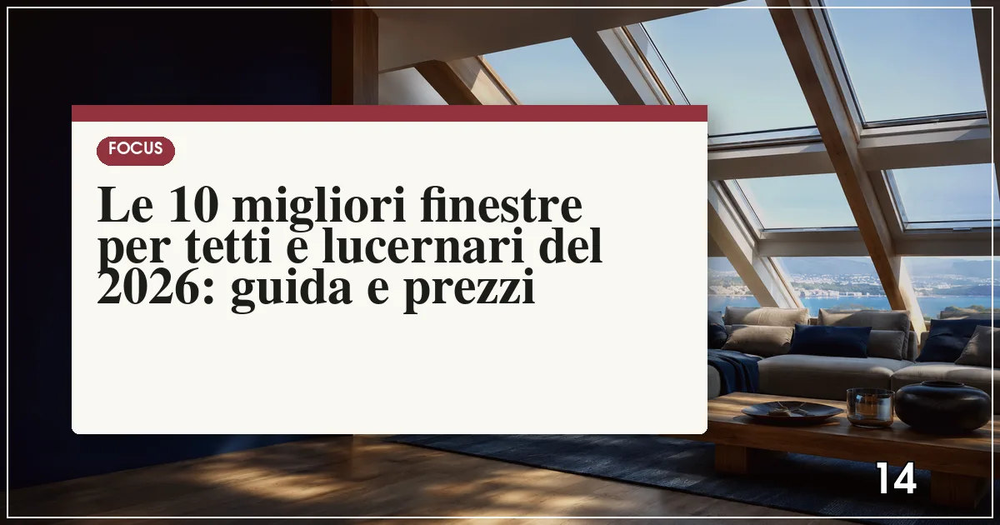

La migliore finestra per tetti del 2026 è Velux INTEGRA (apertura bilico o proiezione, motorizzazione con sensore pioggia, Uw fino a 1,0 W/m²K); il miglior rapporto qualità-prezzo è Fakro. Prezzi: da 250-400 euro (manuale base) a 1.200-2.000 euro (motorizzata con tenda), posa esclusa.
In sintesi
- Velux resta il riferimento assoluto; Fakro offre pari tecnologia a prezzi inferiori del 15-25%.
- L'apertura a bilico è lo standard; la proiezione fino a 45° dà più visuale e vale su tetti poco inclinati.
- Per il comfort estivo serve la tenda oscurante esterna o la vetratura con protezione solare.
- Prezzi 2026: 250-600 euro per una finestra manuale standard, 800-2.000 per le motorizzate, posa esclusa (300-600 euro).
- La sostituzione delle finestre per tetti può rientrare nel bonus 50% se migliora la trasmittanza.

Una finestra per tetti ben scelta trasforma un sottotetto buio in uno spazio abitabile: porta luce zenitale — che illumina fino al doppio rispetto a una finestra verticale di pari superficie — e ventilazione naturale, risorsa preziosa in mansarda dove il calore estivo ristagna. Ma è anche il serramento più esposto della casa: grandine, neve, pioggia battente e irraggiamento diretto richiedono vetrature e guarnizioni specifiche.
Il mercato è più concentrato di quanto sembri: il gruppo Velux (che controlla anche i marchi economici Altaterra come Dakea, RoofLITE, Optilight e Solstro) e il gruppo polacco Fakro coprono la maggior parte del venduto in Italia, con Roto e Keylite a completare l'offerta di fascia medio-alta. Le differenze reali si giocano su vetratura, meccanismo di apertura, raccordi di impermeabilizzazione e tende integrate.
Per questa Top 10 abbiamo valutato trasmittanza Uw, qualità della vetratura, sistemi di apertura e motorizzazione, disponibilità di tende oscuranti e prezzo. Se state riqualificando tutta la casa, la sostituzione delle finestre per tetti si combina con il bonus serramenti 2026 e con gli interventi di efficienza della nostra Top 10 del risparmio energetico.
La classifica: i 10 lucernari e finestre per tetti del 2026
Velux INTEGRA — il riferimento assoluto, ora intelligente
Il marchio danese ha inventato la finestra per tetti nel 1941 e resta il benchmark: la gamma INTEGRA offre apertura elettrica o solare con sensore pioggia di serie (la finestra si chiude da sola alle prime gocce), controllo da app e integrazione con tende oscuranti e tapparelle esterne. Le vetrature arrivano a Uw 1,0 W/m²K con triplo vetro e protezione solare, con classi di resistenza alla grandine elevate.
Prezzi indicativi: 400-700 euro per le versioni manuali, 900-2.000 euro per le INTEGRA motorizzate, tenda esclusa. La rete di installatori certificati VIP è la più capillare, e i raccordi di impermeabilizzazione per ogni tipo di copertura sono il vero valore aggiunto.
- Sensore pioggia di serie sulle motorizzate
- Ecosistema completo tende e tapparelle
- Installatori certificati in tutta Italia
- Prezzo più alto della categoria
- Alcuni accessori solo originali a costo pieno
Fakro — la tecnologia polacca al prezzo giusto
Il secondo produttore mondiale è cresciuto fino a insidiare Velux sul piano tecnico: apertura a bilico con asse nella parte alta della finestra (più visuale e più luce), vetrature con triplo vetro e Uw fino a 0,97-1,1 W/m²K, versioni con apertura combinata bilico-proiezione (preSelect) e motorizzazioni Z-Wave integrate nella domotica.
Prezzi indicativi: 300-550 euro per le manuali, 700-1.500 per le motorizzate, mediamente il 15-25% sotto Velux a parità di dotazione. Ottima la disponibilità di misure speciali e finestre per tetti piani.
- Rapporto qualità-prezzo eccellente
- Asse di rotazione alto: più visuale
- Domotica Z-Wave integrata
- Rete installatori meno capillare
- Tende e accessori meno diffusi nei negozi
Roto — la meccanica tedesca con il raccordo a incasso
Il marchio tedesco (noto per la ferramenta delle finestre verticali) produce finestre per tetti con un punto di forza unico: la gamma Designo con apertura a bilico e blocco di sicurezza, più versioni che si aprono a sporgenza totale per l'accesso al tetto. La meccanica è sovradimensionata e durevole, le vetrature arrivano a Uw 1,0-1,1 W/m²K.
Prezzi indicativi 350-700 euro per le manuali, 800-1.600 per le elettriche. Molto apprezzata dai lattonieri per la qualità dei raccordi e la semplicità di installazione su coperture complesse.
- Meccanica robusta e duratura
- Versioni uscita-tetto
- Ottimi raccordi di impermeabilizzazione
- Gamma tende più limitata
- Rete vendita meno capillare al Sud
Keylite — la sfida irlandese su prezzo e semplicità
Il produttore irlandese punta su installazione rapida: raccordi integrati nel telaio, staffe universali e un sistema che riduce i tempi di posa anche del 30%. Le finestre a bilico raggiungono Uw 1,1-1,3 W/m²K con doppia o tripla vetratura, con maniglia nella parte bassa comoda anche per persone di statura minore.
Prezzi indicativi 280-500 euro per le manuali, 650-1.200 per le motorizzate. La scelta giusta per cantieri con molte finestre (residenze, B&B) dove il tempo di posa pesa sul budget.
- Posa più rapida del mercato
- Prezzo competitivo
- Maniglia bassa comoda
- Gamma accessori più limitata
- Uw leggermente superiore ai primi tre
Dakea — la qualità del gruppo Velux in versione essenziale
Dakea è il marchio medio del gruppo Altaterra (controllata Velux): stessa piattaforma industriale, dotazioni essenziali ma solide, vetrature con Uw 1,2-1,4 W/m²K e garanzia di 10 anni. Le versioni con triplo vetro e motorizzazione coprono le esigenze principali senza fronzoli.
Prezzi indicativi 250-450 euro per le manuali, 600-1.100 per le elettriche. È la via intelligente per avere l'affidabilità del primo gruppo mondiale con un risparmio del 20-30% sul listino Velux.
- Piattaforma industriale Velux
- Prezzo medio-basso
- Garanzia 10 anni
- Dotazioni e finiture essenziali
- Meno accessori integrati
Optilight — l'alternativa economica del gruppo Altaterra
Sempre del gruppo Velux, Optilight copre la fascia economica con finestre a bilico e proiezione da Uw 1,3-1,5 W/m²K: prestazioni oneste per mansarde e sottotetti usati stagionalmente. Prezzi indicativi 200-380 euro, tra i più bassi per un prodotto certificato. Ricambi e raccordi condividono la logistica del gruppo, facili da reperire.
RoofLITE+ — il primo prezzo con la firma di un grande gruppo
Terzo marchio Altaterra, RoofLITE+ è pensato per il fai-da-te evoluto e le piccole ristrutturazioni: bilico manuale, vetratura doppia basso-emissiva, raccordi universali. Prezzi indicativi 180-350 euro. Adatto a garage, soffitte e locali tecnici; per camere da letto mansardate meglio salire di gamma per acustica e trasmittanza.
Okpol — il solido polacco da cantiere
Produttore polacco indipendente con un catalogo ampio: finestre a bilico, proiezione, lucernari per tetti piani e botole di accesso, con vetrature fino a Uw 1,1 W/m²K. Prezzi indicativi 220-450 euro. In Italia è distribuito da rivendite edili: buona scelta quando il fornitore di fiducia lo tratta, con rapporto qualità-prezzo interessante.
Ubbink — lo specialista olandese dei lucernari fissi
Storico marchio olandese dei sistemi per coperture, Ubbink è forte su lucernari fissi e apribili per tetti piani e cupole, più che sulle finestre da mansarda: la scelta per verande, scale e ambienti dove serve solo luce zenitale. Prezzi indicativi 300-800 euro a seconda di dimensioni e vetratura, con ottime guarnizioni per coperture a membrana.
Solstro — il marchio essenziale per il budget minimo
Chiude la classifica Solstro (sempre gruppo Altaterra), posizionato sul primo prezzo assoluto: finestre a bilico manuali con doppio vetro a partire da circa 150-300 euro indicativi. Qualità corretta per la fascia, senza motorizzazioni né vetrature speciali: la risposta quando il vincolo è puramente economico e il locale non è abitativo primario.
Tabella comparativa: aperture, trasmittanze e prezzi delle 10 finestre per tetti
| Marchio | Apertura | Uw (W/m²K) | Motorizzazione | Prezzo indicativo (€) |
|---|---|---|---|---|
| Velux | Bilico / proiezione | 1,0–1,3 | Elettrica / solare, sensore pioggia | 400–2.000 |
| Fakro | Bilico alto / preSelect | 0,97–1,1 | Z-Wave integrata | 300–1.500 |
| Roto | Bilico / uscita tetto | 1,0–1,1 | Elettrica | 350–1.600 |
| Keylite | Bilico | 1,1–1,3 | Elettrica / solare | 280–1.200 |
| Dakea | Bilico / proiezione | 1,2–1,4 | Elettrica | 250–1.100 |
| Optilight | Bilico / proiezione | 1,3–1,5 | Solo alcune serie | 200–600 |
| RoofLITE+ | Bilico | 1,4–1,5 | No / limitata | 180–500 |
| Okpol | Bilico / proiezione | 1,1–1,4 | Su richiesta | 220–700 |
| Ubbink | Fisso / apribile (tetti piani) | 1,2–1,6 | Su alcune serie | 300–800 |
| Solstro | Bilico | 1,4–1,6 | No | 150–400 |
Nota metodologica: i prezzi sono indicativi per finestra singola in misura standard (circa 78×118 cm), rilevati a luglio 2026, posa esclusa (indicativamente 300-600 euro a finestra, di più su coperture complesse). Tende oscuranti e tapparelle esterne sono accessori a parte.
Come scegliere la finestra per tetti: apertura, vetratura e misure
Bilico o proiezione?
L'apertura a bilico (rotazione sull'asse centrale) è lo standard: consente di ruotare l'anta per pulire il vetro esterno da dentro. La proiezione (apertura dal basso fino a 30-45°) offre più visuale e non occupa spazio interno, ma costa di più e si pulisce peggio. Su tetti poco inclinati (sotto i 25°) la proiezione dà più cielo; su quelli ripidi il bilico è più comodo.
La vetratura giusta per il clima
In mansarda il problema principale è il caldo estivo: scegliete vetrature con protezione solare (fattore g basso) o, meglio, aggiungete la tenda oscurante esterna o la tapparella, che blocca il calore prima del vetro. Per l'inverno, il triplo vetro con Uw intorno a 1,0 W/m²K è ormai lo standard consigliato. La classe di resistenza alla grandine conta nelle zone a rischio: chiedete la certificazione.
Le misure si leggono sul travetto
Le finestre per tetti hanno misure standard legate all'interasse dei travetti (55, 66, 78, 94, 114 cm di larghezza tipica): misurate la luce tra i travetti prima di scegliere. In sostituzione, quasi sempre esiste la finestra della stessa misura del vecchio modello: la posa si riduce a poche ore senza opere murarie.
Posa, permessi e bonus: le regole del 2026
Serve un permesso per aprire una finestra sul tetto?
Dipende dal Comune: la nuova apertura di una finestra per tetti è in genere attività edilizia libera o soggetta a comunicazione (CILA/SCIA a seconda dei regolamenti locali e dei vincoli), mentre la sostituzione di una esistente è quasi sempre manutenzione ordinaria libera. In condominio serve attenzione al decoro architettonico e, nei centri storici, possono esserci vincoli paesaggistici. Verificate sempre con l'ufficio tecnico comunale prima dell'acquisto.
La posa è tutto: raccordi e impermeabilizzazione
Il punto critico non è la finestra ma il raccordo con la copertura: tegole, coppi, ardesia e membrane richiedono kit di impermeabilizzazione specifici, e una posa sbagliata si paga con infiltrazioni al primo temporale. Affidatevi a installatori formati dal produttore (Velux VIP, reti certificate Fakro e Roto) e pretendete il collaudo con prova d'acqua. I principi sono gli stessi della posa qualificata UNI 11673.
Il bonus 50% copre anche le finestre per tetti
La sostituzione di finestre per tetti e lucernari con modelli a migliore trasmittanza rientra nella detrazione del 50% del 2026, alle stesse condizioni degli altri serramenti: limiti Uw del decreto, bonifico parlante, pratica ENEA entro 90 giorni. I dettagli nella nostra guida al bonus serramenti 2026.
Domande frequenti su lucernari e finestre per tetti
Qual è la migliore finestra per tetti del 2026?
Secondo la classifica Infissi Media 2026, la migliore finestra per tetti è Velux INTEGRA, per la motorizzazione con sensore pioggia, l'ecosistema di tende e la rete di installatori certificati. Il miglior rapporto qualità-prezzo è Fakro, con tecnologia equivalente a prezzi inferiori del 15-25%. Per il budget minimo, Dakea e Optilight del gruppo Velux.
Quanto costa installare una finestra per tetti nel 2026?
La finestra costa indicativamente 200-600 euro in versione manuale standard e 700-2.000 euro motorizzata. La posa incide per 300-600 euro a finestra, di più su coperture in coppi o con opere di apertura del foro. Una fornitura completa posata per due finestre manuali sta tipicamente tra 1.200 e 2.200 euro.
Meglio apertura a bilico o a proiezione?
L'apertura a bilico (rotazione centrale) è la più versatile: permette la pulizia del vetro esterno dall'interno e la ventilazione rapida. La proiezione, che apre l'anta dal basso fino a 30-45°, offre più visuale e non ingombra l'interno, ed è preferibile su tetti poco inclinati o sopra mobili. Le versioni combinate (bilico-proiezione) costano di più ma uniscono i vantaggi.
Serve il permesso per installare un lucernario?
La sostituzione di una finestra per tetti esistente è generalmente manutenzione ordinaria libera. La nuova apertura può richiedere CILA o SCIA a seconda del regolamento edilizio comunale e dei vincoli (centro storico, paesaggio, decoro condominiale). È sempre consigliabile verificare con l'ufficio tecnico del Comune prima di iniziare i lavori.